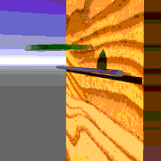
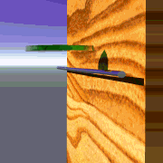
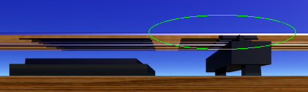
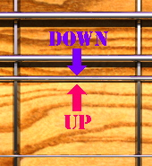
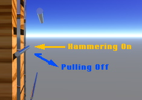
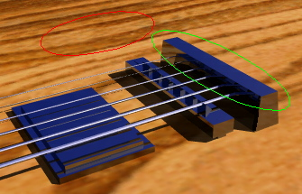
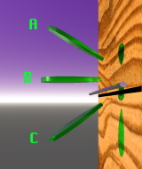
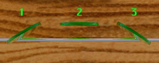

[ 良い例 ]






※本ページは右利きの方用に記載しています。左利きの方は、右手と左手を逆にしてお読みください。[ 機材について ] ■ギター Shecterのネック形状がUltra Thin "C"のギターがお勧めです。 ・6弦ギターでドロップチューニング(ドロップCなど)をする場合には、弦長を長く確保できるもの(エクストラ・ロングスケールなど)を選びます。 レギュラースケールなどでドロップチューニングをすると、コードが不協和音になります(オクターブチューニングでは解決できません)。 ・チューニングを変えることが多い、または太い音を出したい場合は、固定式ブリッジ(アーミングが出来ないもの)がお勧めです。 なお、トレモロ式ブリッジ(アーミング出来るもの)は、フロイド・ローズ(ファイン・チューナー付き)がお勧めです。 ・ピックアップは、低ノイズで太い音が出るハムバッカーがお勧めです。 ・ギターの音がこもりぎみの場合はピックアップを下げることで解消出来ます。 （但し下げ過ぎると音が細くなったり接触不良の原因になることがあります） ・Fishman Fluence Modernは3種類のVoiceを選択できます。EMGよりも音がクリアで感度が高いです。 Voice 1はエッジが出るため、速いフレーズに適しています。 Voice 2はエッジは甘くなりますが重低音が出ます。 Voice 3はシングルコイルでブリッジ側はクリーンがとても綺麗に出ます。 ■弦 サステインが無くなった(音がすぐに小さくなる)場合は弦の交換時期です。 ・BlueSteel ：高音域での音がとてもクリアに出ます。 ・ErnieBall ：低音側は迫力のある歪みが出せます。 ■ピック ・Dunlop Totex (1.14mmなど)： 鋭いアタック音が出ます。すり減った部分をヤスリ等で削るとエッジが復活します。 ・Dunlop Delrin 500 (1.14mmなど)： ハリのある音が出ます。弦に引っかかり難く、リード(ソロ)などに適しています。 ■エフェクツペダル ・Voxamp CUTTING EDGE: 真空管Nutubeを使用したハイゲインエフェクターです。 TIGHTを上げると音のエッジが鋭くなります。後ろにVoxamp Silk Driveを繋ぎ、BrightをON(ACアダプタ側)にし、 GAINを12〜13時付近まで上げるとパワー管に似た歪みを追加することができます。 ■ギターアンプ ・Voxamp MV50 HighGain: 真空管Nutubeを使用したハイゲインなチューブプリアンプです。 オーバドライブ/ディストーションペダルとして使用することもできます。 GAINとギターのボリュームを下げ、弱く弾くとクリーンになります。 MID CTRLをNormalにするとブリッティッシュ系アンプ、-にするとアメリカン系アンプの音に近づきます。 ※早いフレーズを弾く場合はMV50 HighGainの前に下記のようなエフェクツペダルを接続します。 VOX FUEL INJECTOR： 真空管Nutubeを使用したオーバードライブです。DRIVEを上げると粗い歪みが加わります。 DRIVEを9時付近にすると弾き易くなり、TONEを少し下げると音のバランスが良くなります。 BOSS OD-200 ： アナログ/デジタルのオーバードライブ/ディストーションです。 CNTR OD、SCREAM、OVERDRIVE、X-DRIVEの順にタイトになっていきます。 CNTR ODはアンプの歪みを活かしつつ、ゲインブーストが出来ます。 X-DRIVEはエッジがタイトでキレがあり、7〜8弦がクリアに出ます。 DRIVEとHIGHを上げ、LOWを下げるとDjent系の音になります。 ※Nutubeを多段にするほどフルチューブアンプの音に近づいていきます。 VOX FUEL INJECTOR → VOX MV50 HighGain → VOX MV50 Cleanがお薦めです。 ※ノイズが大きい場合にはMV50 HighGainの後にFREE THE TONE IG-1Nなどのノイズゲートを接続します。
■オーディオインターフェース ライン入力用のオーディオインターフェースはZOOMのUAC-232がお勧めです。 32bit Float対応でソフトウェアが32bit Floatに対応・設定していれば音割れしても後から修正することができます。
■アンプシミュレータ ・Neural DSP Nano Cortex: AIを搭載したアンプシミュレータで、アンプやエフェクターの音をキャプチャして使うことができます。 キャビネットIRやイコライザ、ノイズリダクションなどはOFFにしてキャプチャすると再現度が上がります。 また、独自のIRを使用することができます。Ola EnglundのインパルスレスポンスThe One TLM102などがお勧めです。 ・Neural DSP Mesa Boogie Mark IIC+ Suite: AIを使用して再現したMesa/Boogie Mark IIC+です。 アンプはLEAD DRIVEとLEAD MASTERのノブのみをPULL、5バンドEQはOFFにし、Overdrive-1と9 Band EQを使うと現代的な音が作れます。 キャビネットはOla EnglundのインパルスレスポンスThe One TLM102を使用するのがお勧めです。

| ダウンピッキング時(上→下) | アップピッキング時(下→上) | |||
| 音の特性 | 抵抗 | 音の特性 | 抵抗 | |
| A | 細くなる | 大きい | 太くなる | 小さい |
| B | 普通 | 普通 | 普通 | 普通 |
| C | 太くなる | 小さい | 細くなる | 大きい |
ピックの水平角度これはギターのボディーを上から見た図です。 一般的には3が良く使われます。 ストリングスキッピング(隣の弦を飛ばして引く奏法)の場合は2にするとスピードアップできます。 
| アタック音 | 抵抗 | |
| 1 | 鋭い | 小さい |
| 2 | 普通 | 普通 |
| 3 | 鋭い | 小さい |
ピッキング 注意!! ここでは説明の為に大きな動作をしていますが実際はピックをあまり大きく動かしません。 [ あまり良くない例 ]これはあまり良くない例です。ピックを弦に引っかけるようにピッキングしています。 弦にピックが引っかかるためにスムーズなピッキングが行えません。 ただし、ピッキング・ハーモニクス(ピックで弦を弾くと同時に親指の側面で弦に触れて ハーモニクス音を出す奏法)の時は、このピッキングを使用することもあります。 
[ 良い例 ]これは良い例です。ピックで弦を押すようピッキングしています。 但し、「弦を押す」といっても力をいれてピッキングするのでは無く、 「手首の返し」を使い「軽くかつ鋭く」ピッキングします。 ※真空管アンプを使用する場合は、(力を入れずに)弦を弾く速度を速くするとクリアな音がでます。 また、センター〜フロントピックアップ付近で弦を弾くと音が太く、クリアになります。 
[ パームミュート(ブリッジミュート) ] 本来ミュートとは弦が鳴っている時、右手か左手で弦に触れて弦の振動を止めるテクニックです。 これを発展させて「弦を弾く」と「弦の振動を止める」を同時に行なう奏法がパームミュート(Palm mute)です。 具体的には、上の図の丸で囲ってある所を手の側面で押さえたまま弾きます。 ネック側を押さえるほどミュートが深く掛かり、ブリッジ近くを押さえるとハーフミュートになります。 ミュートする部分によって音が変わります。また、手の側面で押さえる力を強くすると金属音が出ます。 ※真空管アンプで低音域を弾く場合は、ミュートとピッキングするポイント をネックよりに移動させると音がタイトになります。 
[ チョーキング | ヴィブラート ] 弦を押さえたまま弦を下図の様に引っぱる事で音程を変化させる奏法です。 人によってやり方が違うので代表的な物を紹介しています。まず、ドアのノブを回転させるように腕を中心軸にして回転させます。 この動きを弦を押さえたまま行うとチョーキング(String Bending)になります。 このチョーキングの音程の上下を速くするとヴィブラートになります。 
[ ハンマリングオン | プリングオフ | トリル | タッピング ] ハンマリングオンは弦を叩いて音を出す奏法、 プリングオフは押さえていた指を下にずらす様に外して音を出す奏法です。 ピッキングしないで音を出すことができますが、ピッキングと組合せて使うこともあります。 連続したハンマリングオン、プリングオフをトリルと呼びます。 ピッキングしている方の指でハンマリングオン、プリングオフをしながら片方の手でもハンマリングオン、 プリングオフをする奏法をタッピング奏法と呼んだりします。 この奏法は音量が下がり易いので音量を一定に保つ様に注意して下さい。
[ スラップ ] ベースで用いられるスラップ奏法(チョッパー奏法)で、右手親指の左側面で低音弦を叩き、 人差し指または中指で高音弦を引っ掛けて(チキンピッキングに近い動きで)音を出します。 人差し指周りに腕を回転させるとスムーズに弾けます。
[ 実践編 ] ここからは具体的な曲を課題に練習する方法を紹介していきます。 確実に弾けるスピードから始めて徐々にスピードアップした方が良いようです。 タブ譜はHarmony-Centralからダウンロード出来ます。
[ アルペジオ | コード ] アルペジオは音を歪ませずに（または弱く歪ませたりコーラスを掛けて ）弾く奏法です。 右手と左手の連携に慣れていない方はまずこれから始めた方が上手くいくようです。 慣れて来たらコードを取り入れたりすると効果的です。
[ リフ -ダウンピッキング編- ] ダウンピッキングとはその名の通りピックを降り下ろすだけで弾く奏法です。 独特のリズム感が出せるためロック系では必須のテクニックです。 慣れない内は６弦だけでパームミュートの練習を行い、慣れて来たら５弦も使った弦移動、 コードを使って弾くという様に段階的に練習すると効果的です。 ※一定の音量とリズムを保てる様になった後、音の強弱(ダイナミクス)や変拍子(ポリリズム)を練習すると、コントロールの幅が広がります。
[ リフ -オルタネイト編- ] オルタネイト奏法はピックを降り下ろし、ピックを戻す途中でもう一度弾く奏法です。 オルタネイト奏法では変拍子が良く使われますが、まずはゆっくりとしたスピードで 簡単なフレーズを練習し、コツをつかんでから変拍子を練習するのがお勧めです。 オルタネイトピッキングのコツは「ピックを必要以上に大きく動かさないこと」です。 ※弾かない弦は左手でミュートして(弦に軽く触れて)おくと、ノイズが軽減出来ます。
[ リード編 ] 伝統的なロックなどで終盤にあるギター中心のパートです。ソロと呼ばれることもあります。 確実に弾けるまでテンポを落とし、演奏手順を意識しないでも弾けるようにしてから、徐々に速度を上げていきます。 目標とする速度よりも少し速く弾けるようにすると、目標速度での演奏に安定感が生まれます。 VLCメディアプレーヤーは音程を変えずに再生速度を変更できるため、耳コピーや練習時にお勧めです。 リードに慣れていない場合は、ピックを使わないでハンマリングオン、プリングオフを練習します。 ピックを使う場合は、1弦上だけで練習し、慣れてきたら2弦も使うと効果的です。 ピックを持つ指以外を軽く握るとリードが弾き易くなり、演奏が安定します。 ピックを深めに持つ(指と弦の距離を縮める)と簡単にスピードアップが出来ます。 なお、リフを弾く時とは異なるピッキングポジションで弾く場合もあります。これはリード時のピッキングポジションの一例です。 緑で囲ってある場所は手を軽く乗せたりします。 赤で囲ってある場所は小指などを軽く置いたりします。 ※リードでは左手で拍を取り、右手を同期させるようにした方がスムーズに弾けますが、 4本の指で拍を取るこで、リズムが崩れやすくなるので注意が必要です。 ※スライド(左手で弦を押さえたままフレットを移動し、音程を変化させる奏法)、ハンマリングオン、プリングオフ、 チョーキングやヴィブラートを部分的に使用すると曲に表情をつけられます。 参考資料： Dolphin Street -Short rock guitar lick video lesson- DVD&CD付き 速弾きがうまくなる理由 ヘタな理由 リットーミュージック 
[ 理論編 ] 半音／全音： 半音＝ギターの１フレット分、全音＝ギターの２フレット分の音程差です。 音名： ドレミファソラシドはCDEFGABCと呼ばれることもあります。 ♭は半音下がる事を意味し、♯は半音上がることを意味します。 スケール： ・１オクターブ（ド〜次のド）の中で使って良い音階(Note)を決めたものをスケールと呼びます。 １番下の音程をTonic音と呼び、Tonic音に対して使って良い音程を制限しています。 例えば沖縄の音楽がそれらしく聞こえるのは琉球音階と呼ばれる音階だけを使って作曲しているためです。 ・1オクターブを半音毎に区切った場合、2048個のスケールが存在します。 ・スケール中のNoteをTonic音として新しいスケールを作る方法をモード奏法と呼びます(レミファソラシドレなど)。 ※主要なスケールの一覧です(ウォーミングアップにお薦めです)。【DOWNLOAD】 コード： ・１番下の音程に対して幾つかの高い音(Note)を付け加える時の規則をコードと呼びます。 １番下の音程をRoot音と呼び、Root音に対して使って良い音程をスケールを元に制限しています。 ・Major(Minor)スケールのRoot音に5度(Root音を1番目とカウントし、スケールの5番目のNote)を加えると5thのPowerコードになります。 8度を追加することもあります。 ・Major(Minor)スケールのRoot音に4度を加えたコードはロックやブルースで用いられます。 5thのパワーコードより濁った音になりますが、より低い(5度下のPowerコードに近い)音になります。 ・MajorスケールのRoot音に3度と5度を加えるとMajorコード、 MinorスケールのRoot音に3度と5度を加えるとMinorコードになります。 Major/Minorコードにテンションコードとして7、9、11、13度を追加することがあります。 ・Major/Minorコードに6度を追加すると6thコードになります。 Major(Minor)スケールのRoot音に4度と5度を加えるとSUS4コード、 Whole ToneスケールのRoot音に4度と5度を加えるとAugumentコード、 Deminisshu Code Toneスケールの全てのNoteを混ぜるとDeminisshuコードになります。 ・１番下の音程よりも低い音程が入っているオンコードと呼ばれる物もあります。 ・ギターでは物理的に出せないコードがあるため(6弦のE Major/Minorコードなど) 、 いくつかのNoteは省略もしくは1オクターブ違いにすることがあります。 Diatonicコード進行例: ・Major/MinorスケールのTonic音(または3度か5度)をRoot音としたコードをTonicコード、 4度(または2度か6度)をRoot音としたコードをSubdominantコード、 5度(または2度か7度か8度)をRoot音としたコードをDominantコードと呼びます。 Tonic、Subdominant、Dominantコードの3つを纏めて3コードと呼びます。 ・典型的なコード進行(Cadence)は下記の何れかになります。 Tonic → Dominant → Tonic Tonic → Subdominant → Dominant → Tonic Tonic → Subdominant → Tonic リズム: ・ロックなどではバスドラムを裏拍、スネアを表拍(手拍子のタイミングなど)、 民族音楽などではバスドラムを表拍、スネアを裏拍にすることが多いです。 ・音を後ろに伸ばして後の音と融合(後の音は休拍)するSyncopation(リズムを食うと呼ぶこともあります)、 後の音を前に伸ばして今の音と融合(今の音は休拍)するAnticipationがあります。 ・複数の異なるリズムを組合わせるPolyrhythmがあります。 ・SyncopationやAnticipation、Polyrhythmを用いることで 表拍/裏拍(ON/OFFビート)の切替えや変拍子を作ることができます。 曲の構成: Intro→Verse→(Bridge)→Chorus→Verse→(Bridge)→Chorus→(Solo、Interlude)→(Verse)→(Bridge)→(Chorus)→Endingが典型的な流れです。 日本ではVerseやBridgeを登場順にAメロ、Bメロ、Cメロなどに分類し、Chorusをサビ、Endingをアウトロと呼びます。 参考資料： かんたん理論■ロック・スケール＆コードの知識 シンコ−ミュージック ９７０円（税抜き） かんたん理論■ロック・スケール＆モードの知識 シンコ−ミュージック ９７０円（税抜き）
[ Return to top ]
文章や画像等の無許可の転載、及び再配付を禁止します。 All rights reserved.